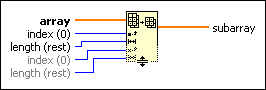
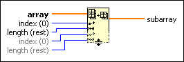

Array Subset Function
Owning Palette: Array VIs and Functions
Requires: Base Development System
Returns a portion of array starting at index and containing length elements.

 Add to the block diagram Add to the block diagram |
 Find on the palette Find on the palette |
Owning Palette: Array VIs and Functions
Requires: Base Development System
Returns a portion of array starting at index and containing length elements.

| Add to the block diagram |
Find on the palette |
When you wire an array to this function, the function resizes automatically to display index and length inputs for each dimension in the array. If you wire a 1D array to the function, the function displays the index inputs for an element. If you wire a 2D array to the function, the function displays the index inputs for a row and column, respectively. If you wire a 3D through nD array to the function, the function displays the index inputs for a page.
The connector pane displays the default data types for this polymorphic function.
You can use the Index Array function to modify the shape of the subarray. For example, if the input to an Index Array function is a 2D array and you wire only the row input, you extract a complete 1D row of the array.